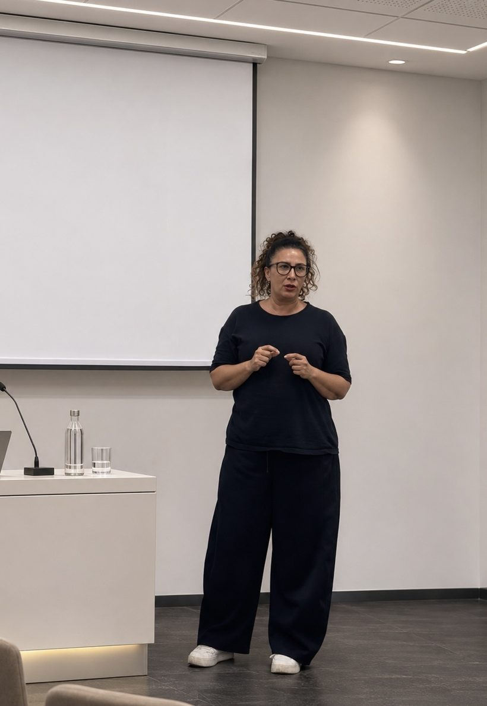

Chi sono

Sono Simona Reale, dermopigmentista e tricopigmentista a Roma, zona Flaminio. Mi occupo di dermopigmentazione, la micropigmentazione del viso e del corpo, e di tricopigmentazione. Sono la fondatrice di AUREALE, il progetto in cui riunisco il mio metodo di lavoro.
Ho iniziato a studiare tatuaggio e dermopigmentazione nel 2008 e da allora non ho mai smesso di formarmi. Mi sono specializzata in tricopigmentazione e continuo a seguire corsi di approfondimento, perché una tecnica di precisione si affina con lo studio e con la pratica di ogni giorno.
Sono abilitata dalla Regione Lazio come Operatore delle attività di tatuaggio, con un percorso di 800 ore che comprende tricopigmentazione, dermopigmentazione e tatuaggio artistico. È la base su cui ho costruito il mio lavoro, e a cui affianco uno studio continuo.
Oggi lavoro e insegno: sono docente di tricopigmentazione presso MB Accademia, accreditata dalla Regione Lazio. Ai miei allievi insegno prima di tutto a osservare: la tecnica si impara, ma è lo sguardo che rende un risultato davvero naturale.
Standard del percorso formativo: Regione Lazio, DGR 270/2022.
L’eccellenza nasce dalla capacità di osservazione.
Insegno tricopigmentazione nel corso abilitante di 800 ore presso MB Accademia, accreditata dalla Regione Lazio: lo stesso percorso regionale che ho seguito io per ottenere la qualifica. Il mio compito è insegnare a osservare, progettare e controllare la tecnica.
Unisce teoria, progettazione ed esercitazioni tecniche. Gli argomenti:

Il corso di 800 ore comprende anche anatomia e fisiologia cutanea, sicurezza delle miscele e prevenzione delle complicanze, primo soccorso, igiene e sicurezza sul lavoro, comunicazione con il cliente, privacy, diritto, gestione d’impresa e inglese di settore. Le materie sono indicate nello standard formativo della Regione Lazio.
Trovi tutti i dettagli nella pagina Corsi di formazione e il mio profilo di docente sul sito di MB Accademia, accreditata dalla Regione Lazio.
AUREALE Scalp Technique è il protocollo di tricopigmentazione che ho creato. Si basa su tecniche studiate nel dettaglio, ma ogni trattamento viene costruito su misura sulla persona: l’obiettivo è un risultato il più possibile vicino alla sua fisionomia naturale e al suo schema naturale di crescita dei capelli. Per questo proporzioni, colore del pigmento e distanza tra un punto e l’altro vengono studiati caso per caso, in base alla densità dei capelli presenti e al loro colore, e concordati con il cliente in consulenza.
In consulenza ascolto che cosa vuoi ottenere e ti dico che cosa si può ottenere davvero: si arriva insieme alla soluzione più adatta. Il risultato è un effetto ottico e va descritto con onestà: non è un trapianto e non fa crescere capelli.
La consulenza è gratuita. Si può iniziare a distanza, per telefono o su WhatsApp con alcune foto, per capire se serve un effetto rasato, un effetto densità o un infoltimento e quali zone si possono trattare. Poi ci si vede di persona: ti mostro gli strumenti, controllo la pelle, ti spiego il trattamento in dettaglio e ti faccio compilare il consenso informato e la scheda cliente con le indicazioni per prima, durante e dopo. Il preventivo arriva alla fine, perché una pelle irregolare o macchiata dalle foto non si vede.
Lavoro in ambienti a norma, con aghi in confezione singola, sterili e monouso. Dermografo, aghi e pigmenti sono specifici per ciascun trattamento, e i pigmenti sono conformi al Regolamento REACH. Le regole e i riferimenti ufficiali sono nell’articolo Igiene e normative: come riconoscere uno studio adatto. Per capire come si svolge il percorso, leggi la pagina sulla tricopigmentazione o sulla dermopigmentazione.